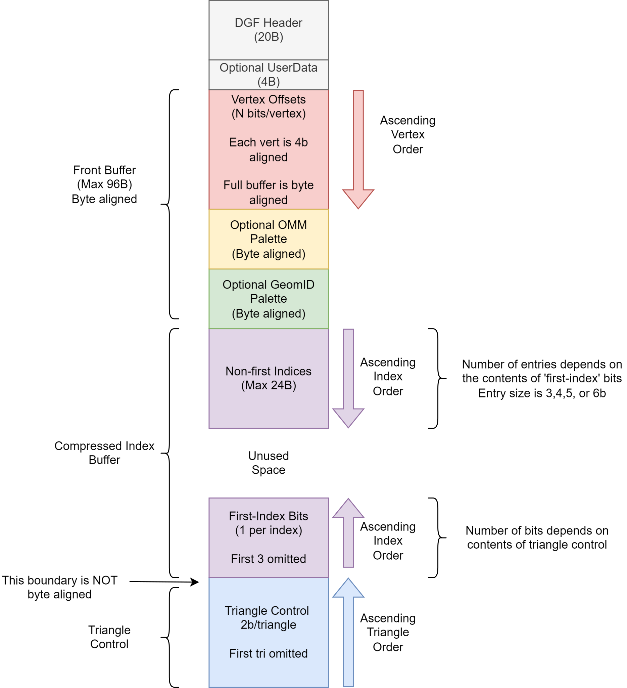
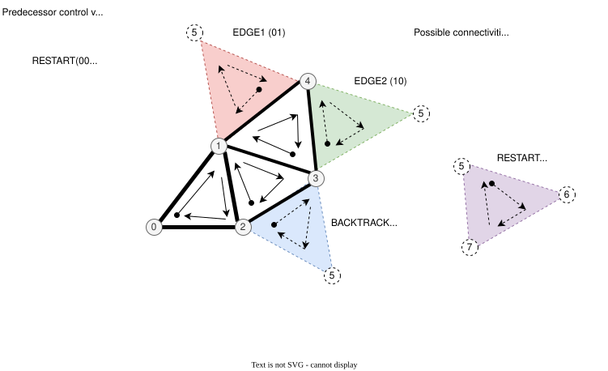
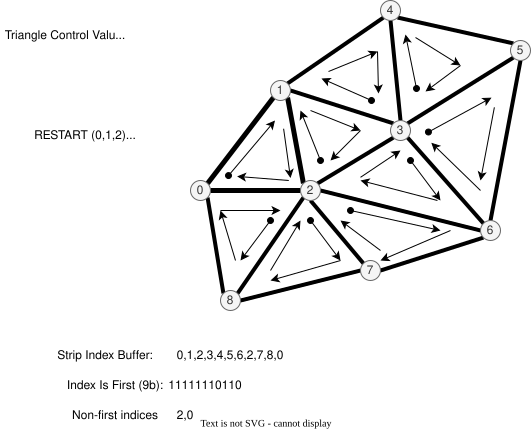

Compressed triangle data
Dense Geometry Format Version 1 (DGF1)
The provisional VK_AMDX_dense_geometry_format extension provides a
way for applications to build acceleration structures from pre-compressed
Dense Geometry Format (DGF) triangle geometry data, enabling improved build
times and reducing both the storage required on disk and the memory
footprint of acceleration structures.
The dense geometry format consists of an array of 128B blocks that encode triangle data. Each block holds a maximum of 64 triangles and 64 vertices.
It is expected that applications will construct DGF content by partitioning meshes into small, spatially localized triangle sets, and attempting to pack each set into a minimal number of DGF blocks. An SAH-aware clustering strategy is crucial for good ray tracing performance. Pre-clustering the geometry in this manner greatly accelerates the acceleration structure build since the implementation receives an efficient spatial partitioning, and does not need to construct one from the original, larger triangle set.
DGF compressors rely on the ability to reorder triangles within a mesh, and rotate triangle vertices in a winding-preserving way. The application must post-process any sideband data which depends on these (shader-visible index buffers, per-triangle attributes).
Block Layout
The 128B DGF block is organized into sections as shown below:

The first 5 DWORDs of a DGF block consist of a fixed header, whose structure is shown below. All bit fields are ordered from LSB to MSB, bytes are 8 bits, and multi-byte fields are little endian.
struct DGFHeader
{
// DWORD 0
uint32_t magic : 8; // must be 0x6
uint32_t bits_per_index : 2; // Encodes 3,4,5,6
uint32_t num_vertices : 6; // Number of vertices (1-64)
uint32_t num_triangles : 6; // Number of triangles (1-64)
uint32_t geom_id_meta : 10;
// DWORD 1
uint32_t exponent : 8; // Float32 scale (exponent-only) with bias 127. Values 1-232 are supported.
int32_t x_anchor : 24; // 24-bit signed two's complement (0x800000 represents -8,388,608)
// DWORD 2
uint32_t x_bits : 4; // 1-16 (add 1 when decoding)
uint32_t y_bits : 4; // 1-16 (add 1 when decoding)
int32_t y_anchor : 24; // 24-bit signed two's complement
// DWORD 3
uint32_t z_bits : 4; // 1-16 (add 1 when decoding)
uint32_t omm_descriptor_count : 3; // 0-7
uint32_t geom_id_mode : 1; // 0 = Constant Mode 1= Palette Mode
int32_t z_anchor : 24; // 24-bit signed two's complement
// DWORD 4
uint32_t prim_id_base : 29;
uint32_t have_user_data : 1; // if set, a UserData DWORD is present between the header and the front buffer
uint32_t unused : 2; // must be 0
// 108B of variable-length data segments follow.
};The per-vertex offsets are tightly packed in the DGF node immediately following the header, in ascending order. The size of each vertex must be 4b-aligned. The size of the vertex data section is byte-aligned. Pad bits are inserted as required, and all pad bits must be zero. The optional OMM palette (if present) starts on the next byte boundary. The optional GeomID palette (if present), starts on the next byte boundary following the vertex data and OMM palette.
The region containing the vertex data, geomID palette, and OMM palette is referred to as the “front buffer”. It is byte-aligned, and its total size may not exceed 96B.
The optional UserData DWORD, if present, is little-endian, and located immediately after the header. If UserData is present, the front buffer starts at byte 24. If UserData is not present, the front buffer starts at byte 20.
Vertex Position Encoding
DGF vertices are defined on a signed 24-bit quantization grid. Each block stores the following:
-
a 24b-per-coordinate signed anchor position,
-
a variable-width (1-16b) unsigned offset for each vertex component (relative to the anchor position),
-
a power-of-2 scale factor which is used to map from the quantization grid to floating-point world coordinates (stored as an IEEE biased exponent).
An equivalent fixed-point encoding scheme is used by Epic’s “Nanite” system.
The decoded floating-point vertex position is computed as follows:
float3 dgf_decode(int24_t Anchor[3], uint16_t Offset[3], uint8_t Exponent)
{
int x = Anchor[0] + Offset[0]; // 24b + 16b add.. 25b result
int y = Anchor[1] + Offset[1];
int z = Anchor[2] + Offset[2];
float fx = (float)(x); // convert results to floating-point
float fy = (float)(y);
float fz = (float)(z);
// apply a pow2 scale factor
float scale = ldexp(1.0f, Exponent - 127);
return float3(fx, fy, fz) * scale;
}With this encoding scheme the maximum representable value is:
(0x7fffff + 0xffff) * 2^127 = 8,454,142 * 2^127 (roughly 1.438e+45)
The minimum is:
(0x800000 * 2^127) = -8,388,608 * 2^127 (roughly -1.427e+45)
This is a larger theoretical dynamic range than IEEE floating-point, and there is no reason for implementations to support all of it.
The minimum and maximum IEEE floats which DGF can encode occur for exponent 232 and integer positions 0x800001 and 0x7fffff (Decimal values -8388607 and 8388607). These values are:
-340282326356119256160033759537265639424.000000 and +340282326356119256160033759537265639424.000000
For context, the range of finite IEEE floats is slightly larger than these:
-340282346638528859811704183484516925440.000000 to +340282346638528859811704183484516925440.000000
For these reasons, DGF only supports exponent values from 1 through 232. This implies that denormals, NaNs, and infinities cannot be represented. If a block encodes an exponent value outside the supported range, all ray-triangle intersection tests against this block will have undefined results.
For exponent values of 232, it is possible to encode a value which overflows the IEEE single-precision range. Results are undefined in this case.
An application can ensure crack-free results across blocks by selecting matching quantization factors for any two neighboring blocks. A simple way to ensure this is to pick a uniform quantization factor for an entire mesh.
Handling Corner Cases
The anchor+offset encoding scheme can be problematic for meshes containing very large triangles. A poor choice of quantization factor can cause the 16b per-vertex offsets or the 24b per-block anchors to overflow. This problem can be worked around in several ways:
-
Choosing a coarser quantization factor (trading off precision),
-
Subdividing large, problematic triangles (whether automatically or manually),
-
Reverting to uncompressed geometry for problematic assets.
The use of a common quantization factor for X,Y, and Z can be problematic for geometry which has a large extent on one coordinate axis but not the others (for example, a freight train with individually modeled cars). In this situation, a coarse quantization factor must be selected to enclose the large coordinate range on the long axis, resulting in inadequate precision on the other two axes. The solution to this problem is to partition the object into multiple parts, each authored in a local coordinate system, and positioned using instance transforms.
Topology Encoding
Topology Sections
DGF represents mesh topology using a form of generalized triangle strip. The order of the stored vertices is used to minimize the size of the topology encoding. The topology encoding consists of an array of triangle control values, and a compressed index buffer.
-
Two control bits per triangle indicating its position relative to the previous two triangles
-
The first triangle always uses RESTART, so this is not stored.
-
Ordered back to front (earlier triangles occupy higher bit positions).
-
-
A compressed index buffer whose length is determined by the contents of the control bits.
-
The index buffer is organized into two sections:
-
An array of “is-first” bits
-
One bit per index indicating whether it is the first reference to a given vertex.
-
The first reference to a given vertex is computed by incrementing a counter.
-
The first three indices are always “first”, so their “is-first” bits are not stored.
-
Ordered back to front (earlier indices occupy higher bit positions).
-
-
A “reuse buffer” containing the indices of reused vertices
-
There is one index for each zero bit in the “is-first” bit vector.
-
The number of bits per index is stored in the header. Valid values are 0,1,2,3, encoding 3,4,5, and 6 bits, respectively.
-
Ordered front to back (earlier indices occupy lower bit positions).
-
Total size may not exceed 24B.
-
-
-
The reuse buffer is located immediately adjacent to the front buffer. The triangle control bits are located at the end of the block, and the "is-first" bits are immediately in front of them.
There are four possible triangle control values:
| Enum | Value | Meaning |
|---|---|---|
RESTART |
0 |
Start a new strip, specifying 3 vertex indices for the triangle |
EDGE1 |
1 |
The second edge of the predecessor triangle is reused as the first edge |
EDGE2 |
2 |
The third edge of the predecessor triangle is reused as the first edge |
BACKTRACK |
3 |
The opposite edge of the predecessor’s predecessor is reused. “Opposite edge” means EDGE1 if the predecessor used EDGE2, or EDGE2 if the predecessor used EDGE1. BACKTRACK is not allowed unless the predecessor used EDGE1 or EDGE2. A BACKTRACK triangle may not occur after a RESTART or another BACKTRACK |
The behavior of the triangle control values is illustrated in the diagram below:

In the diagram above, the vertex orders for the 3 predecessor triangles are:
-
RESTART: 0,1,2
-
EDGE1: 2,1,3 (reuse the 1→2 edge)
-
EDGE1: 3,1,4 (reuse the 1→3 edge)
The four possible vertex orders for the next triangle depend on its control value, and are:
-
RESTART: 5,6,7
-
EDGE1: 4,1,5 (reuse the 1→4 edge)
-
EDGE2: 3,4,5 (reuse the 4→3 edge)
-
BACKTRACK: 2,3,5 (reuse the 3→2 edge)
Note that whenever an edge is reused, its vertices are reversed so that triangle winding is correct. Meshes with mixed winding can be encoded by restarting the strip on each winding change.
The control values for the triangles correspond to an index buffer containing three indices for each RESTART triangle, and one index for each non-RESTART triangle. This index buffer is compressed by re-ordering the vertices by first use and omitting the first reference to every vertex (since this index can be computed by incrementing a counter). A single bit per index is used to indicate whether it is the first reference to its corresponding vertex. The reused indices are then directly stored in a tightly-packed buffer (i.e., not interleaved with the single-bit index-is-first flags).
The example below illustrates the index buffer encoding:

A triangle’s position in the index buffer can be computed by taking the triangle index and adding 2 for each RESTART triangle at the same or earlier positions. This gives the index buffer position for the triangle’s third vertex. The remaining two vertices are inferred from the previous two triangles based on the control values.
An index from the compressed index buffer is extracted as follows:
uint get_index(uint indexPosition, uint64_t isFirst, uint nonFirstIndices[])
{
// count number of "first" vertex refs which precede this one
// NOTE that an efficient implementation would use a popcount() here
int numFirst = 0;
for (int i = 0; i < indexPosition; i++)
{
if (isFirst & (1ull << i))
numFirst++;
}
// the first reference to each vertex is implicit
// reused indices are read
if (isFirst & (1ull << indexPosition))
return numFirst;
else
return nonFirstIndices[indexPosition - numFirst]; // NOTE: Bounds check omitted for brevity
}Primitive Index
The primitive index for a DGF triangle is inferred from its position in the strip, which removes the need to directly store it. A 29b primitive index base is stored in the block and added to the triangle’s position in the block to produce a per-triangle primitive index.
PrimitiveIndex = header.prim_id_base + triangle_index_in_block;The result must fit in 29b. Any overflow results in undefined behavior.
Geometry Index and Opaque Flag
DGF supports specifying a 24b geometry index and a 1b opaque flag on a per-triangle basis. These are combined into a 25b value with the opaque flag in the least significant bit.
There are two supported modes:
-
Constant mode: A 9b geometry index and 1b opaque flag is applied to all triangles,
-
Palette mode: An array of up to 32 25b values is stored in the block, in compressed form, and a per-triangle index is used to select a value from the array.
If palette mode is in use, there is no requirement that the “opaque” flags are consistent for triangles with the same geometry index.
The palette mode is useful in the following circumstances:
-
When the triangles in the block have different geometry index or opacity values
-
When the triangles have the same geometry index, but it is larger than the 9b limit for palette mode.
-
When the number of triangles per geo is small, and constant mode would create under-utilized blocks.
GeomID Palette
There are two supported modes for specifying geometry indices and opaque
flags.
The mode is selected based on the geom_id_mode field in the header:
| Enum | Value | Encoding System |
|---|---|---|
Constant Mode |
0 |
A 9b geomID and a 1b opaque flag are applied to all triangles |
Palette Mode |
1 |
An array of up to 32 25b values is stored in compressed form; each triangle stores an index into the array |
In constant mode, bit 0 of geom_id_meta contains an opaque flag, and bits
1-9 store a geometry index.
These values are used for all triangles.
In this mode, no additional data are stored in the block, and more space is
available for vertex data.
In palette mode, the geom_id_meta field is interpreted as follows:
-
LSBs (4:0) encode a GeomID prefix size in bits (5b, 0-25)
-
MSBs (9:5) encode a GeomID count (5b, 1-32 (add 1 when decoding)).
In palette mode, a GeomID palette structure is inserted in the block. The position and size of the palette structure are aligned to byte boundaries. Pad bits are appended as required, and all pad bits must be zero.
The GeomID palette consists of the following structures in this order:
-
A prefix value whose bit length is given in the 5 LSBs of
geom_id_meta. -
A per-triangle index buffer identifying the payload to use for each triangle.
-
The size of each index is
ceil(log2(GeomID count)).
-
-
An array of N-bit payloads, where N is
25 - prefixSize. The LSB of each payload contains an opaque flag.
The 25b geomID and opaque flag for a given triangle are decoded by selecting a payload from the payload buffer, and concatenating it with the prefix value. The following pseudocode illustrates this process:
// Helper function to extract a bit field from the DGF block
uint ReadBits(uint bitPos, uint numBits);
uint get_id_and_opacity(uint geom_id_meta, uint triIndex, uint triCount);
{
uint prefixSize = geom_id_meta & 0x1f;
uint payloadSize = 25 - prefixSize;
uint geomIDCount = ((geom_id_meta >> 5) & 0x1f) + 1;
uint indexSize = 32 - lzcount(geomIDCount - 1);
uint paletteBitPos = ComputePaletteBitPosition();
uint prefix = ReadBits(paletteBitPos, prefixSize);
uint indexBufferPos = paletteBitPos + prefixSize;
uint index = ReadBits(indexBufferPos + triIndex * indexSize, indexSize);
uint payloadBufferPos = indexBufferPos + triCount * indexSize;
uint payload = ReadBits(payloadBufferPos, index, payloadSize);
return (prefix << payloadSize) | payload;
}OMM Support
DGF provides a degree of OMM support by allowing the triangles within a DGF block to collectively reference a limited number of OMMs. The OMM support in DGF is best suited for scenarios in which a small set of OMMs is repeated many times over a large mesh (e.g. tree leaves). For intricate alpha cutouts applied to high-poly models, it is potentially more efficient to tessellate the geometry and “bake in” the alpha cutout.
Because OMMs are constructed independently of acceleration structure content, the encoder must reserve space for a set of implementation-defined "OMM descriptors" which may be injected into the block at runtime. A DGF block can hold a maximum of 7 descriptors, with each descriptor either encoding an OMM special index or referencing an OMM array entry. The application must know the triangle-to-OMM mapping when the DGF block is encoded, and the encoder must assign triangles to blocks such that the descriptor limit is not exceeded, and ideally such that the number of OMMs per block is minimized.
The mapping of triangles to OMMs is illustrated by the following pseudo-code:
//
// The number of unique return values from "get_omm_index" in a given block must not
// exceed the number of descriptors allocated in the block
//
uint get_omm_index( uint primIDBase, uint triangleIndexInBlock )
{
// reconstruct primitive index
uint primIndex = primIDBase + triangleIndexInBlock;
// map primitive index to the index of an OMM in the OMM array
if( indexed_omms )
return OMMIndexBuffer[primIndex];
else
return primIndex;
}If an OMM index buffer is used to select OMMs, then each distinct index value (including “special indices”) counts as one descriptor. If there is no OMM index buffer, then a simple linear mapping is used instead. This implies that the number of OMM descriptors equals the number of triangles, and that neither number may exceed 7.
DGF blocks with OMM still encode a per-triangle opaque flag. This opaque flag is used whenever OMMs are disabled via ray/instance flags.
Opacity Micromap Palette
If omm_descriptor_count is non-zero, then an “OMM palette” is present.
The OMM palette, if present, is byte-aligned.
Pad bits are inserted as required.
All pad bits must be zero.
The OMM palette consists of a “hot-patched” section, and a “pre-computed” section. The “hot-patched” section is so named because it is expected to be patched at runtime with OMM information when an acceleration structure is constructed. The “pre-computed” section is computed by the application at DGF encoding time. The size and position of the hot-patched section are exposed to applications through the API, but its precise contents are not.
When encoding a DGF block that is expected to be used with OMMs, the encoder must reserve space for the hot-patched section, and place the pre-computed section immediately after it.
-
The “hot-patched” section contains 8 bytes, plus 4 bytes for each OMM descriptor. The application must initialize this space with zeros.
-
The “pre-computed” section contains a per-triangle index indicating which OMM descriptor to use.
-
Triangles are ordered from front to back in ascending order
-
The number of bits per index is derived from the
omm_descriptor_countfield in the header. -
The pre-computed section is padded out to the next byte boundary, and all pad bits must be zero.
-
The following table shows the OMM palette configuration for each value of
omm_descriptor_count:
| omm_descriptor_count | Hot-patch Section Size (Bytes) | Precomputed Section (Bits per Triangle) |
|---|---|---|
0 |
0 |
0 |
1 |
12 |
0 |
2 |
16 |
1 |
3 |
20 |
2 |
4 |
24 |
2 |
5 |
28 |
3 |
6 |
32 |
3 |
7 |
36 |
3 |
The following pseudo-code computes the size, in bits, of an OMM palette:
int compute_palette_size( uint numDescriptors, uint numTriangles )
{
if( numDescriptors == 0 )
return 0;
uint hotPatchSize = 64 + 32*numTriangles;
uint bitsPerIndex = ceil( log2(numDescriptors) );
uint precomputedSize = bitsPerIndex*numTriangles;
precomputedSize = (precomputedSize + 7) & ~7; // byte align
return hotPatchSize + precomputedSize;
}The following pseudo-code illustrates how an encoder could construct the pre-computed section of the OMM palette:
//
// Calculates the descriptor indices in the 'pre-computed' section of an OMM palette.
// The return value is the number of OMM descriptors used.
//
// A return value of -1 indicates that the triangles contain too many unique OMMs and must be split into multiple blocks.
//
int build_omm_palette( uint descriptorIndices[], uint numTriangles, const int* ommIndices, uint spaceAvailable )
{
int ommDescriptors[MAX_DESCRIPTORS];
int numDescriptors=0;
for( uint triangleIndex = 0; triangleIndex < numTriangles; triangleIndex++ )
{
// determine the OMM index assigned to this triangle
int ommIndex = ommIndices[triangleIndex];
// search for an existing descriptor for this OMM or special-index value
uint descriptorIndex=0;
while(descriptorIndex < numDescriptors )
{
if( ommPalette[descriptorIndex] == ommIndex )
break;
descriptorIndex++;
}
// if an existing descriptor was not found, attempt to allocate one
// if unsuccessful, the encoder must split the triangles into multiple blocks
if( descriptorIndex == numDescriptors )
{
if( numDescriptors == MAX_DESCRIPTORS )
return -1; // block must be split
else
ommPalette[numDescriptors++] = ommIndex;
}
descriptorIndices[triangleIndex] = descriptorIndex;
}
// split the triangles if the resulting palette cannot fit in the block
if( compute_palette_size(numTriangles,numDescriptors) > spaceAvailable )
return -1;
return numDescriptors;
}